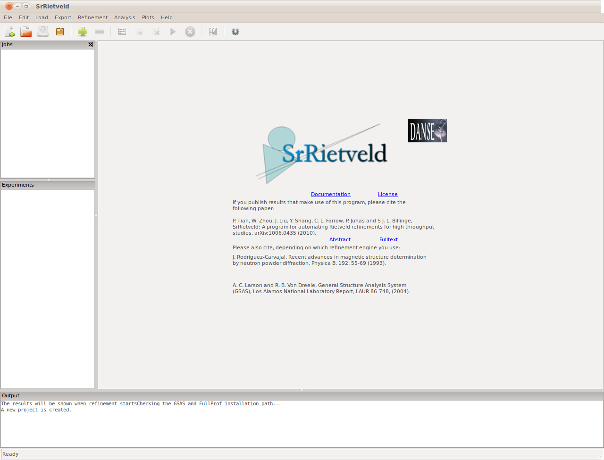
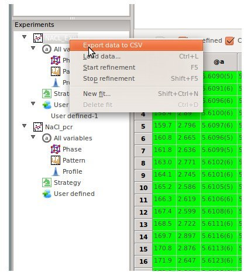
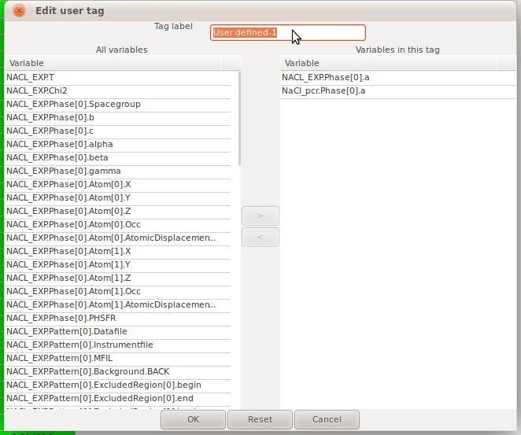
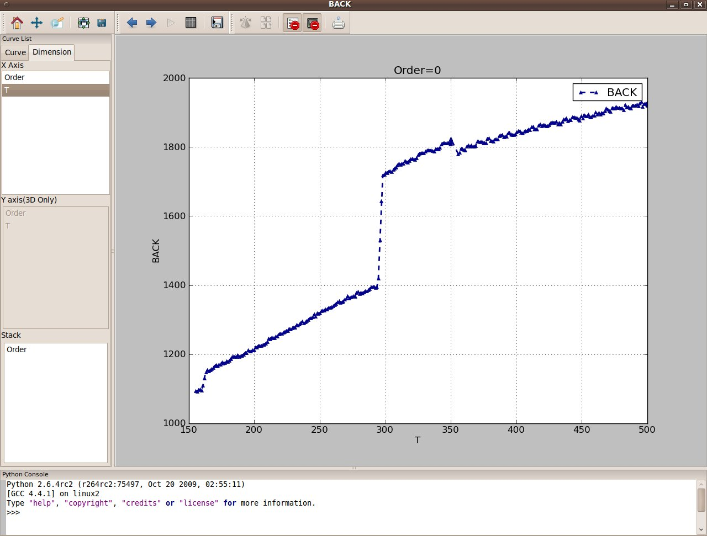
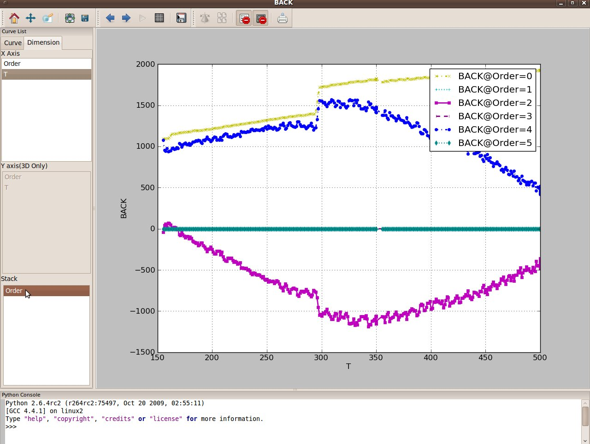

Reference¶
The Main Window Layout¶
The SrRietveld GUI window in start up is shown in the figure below. At the top of the window is the menu bar, which contains drop-down menus with various functions. Below the menu bar is the tool bar, which contains icons for commonly used operations such as creating a new project, opening an existing project, saving a project, executing a refinement, stopping a refinement and making a quick plot. Below the tool bar are three panels. The top left pane is the Experiments panel, the top right is the Current Actions panel, and the bottom is the Output panel.

{kind=link}
Layout of SrRietveld main window
The Experiments panel is used for navigation. The Jobs panel shows the list of jobs and their status in the current project. The right panel has multiple context-sensitive uses. Through it, the user sets up the refinement, configures the fit attributes, sets the fit constraints, reviews the fit settings, displays fitting results. The refinement progress is displayed in the Output panel. All panels except the right panel are dockable windows that can be dragged across the screen, resized, and arranged to accommodate the individual visual needs of the user. Finally, important context sensitive functions (discussed later) are also available through mouse operations such as right-clicking.
The Jobs, Experiments, and Output panes can be undocked or moved to other positions of main window by drag and drop. Users can also close or reopen the Jobs and Output pane by click on the x icon on their title bars, or go to the Layout menu on the menu bar. If users would like to restore the default layout of the main window, go to the menu Layout->Restore default layout.
The Experiments Panel¶
General Layout¶

{kind=link}
The Experiments panel
When a user clicks on a category in the Experiments panel, the right panel will be updated with the parameters in that category. We will now go through all of the categories in the Experiments panel.
All variables contains all of the parameters; it is further broken up into three categories. Phase contains the parameters related to the phase information, such as phase names, lattice parameters in different phases, and atoms information in each phase; Pattern contains information on observed / calculated patterns, which may include the original data file, the background type and coefficients; and Profile contains peak profile information.
If we click Strategy, we see a strategy editor in the right panel. The refinement strategy and strategy file will be introduced in Refinement Strategy .
User defined tag contains the customized tags other than the predefined. The user can define their own tag and categorize variables in their own way.
User Defined Tags¶

The context menu of user definable tags on Experiments panel
To define a customized tag, right click on the tag User defined or one of its child tags, a context menu will pop up, click on Add, a user defined tag edit dialog will pop up. All the variables are listed on the left list of the dialog. The user can click the variables and move it to the right list to contain it in this user defined tag. The tag name can also be edited in the input box on the top of the dialog.

{kind=link}
The user defined tag edit dialog
Note
It is possible to categorize the parameters from different refinement under the same user defined tag, only when the refinements have the same dimensions (same number of fits). This confine is due to the constraint set by the underlying data structure.
The Job Panel¶

The Job panel
The job panel shows the list of the jobs in the current project. Once a user added a job to the project, it will be shown to the end of the job list in the panel. To add a job, user has to select a refinement in the Experiment, and select the datasets in the grid to the right panel, which will be refined in the job. Then click the Refinement->Add job. User can also add the job by click on the button in the tool bar.
The icons in front of the jobs listed in the panel shows the status of the job:
square - submitted, ready to run
parallel red bars - paused, indicates user stopped the refinement
red cross - error, error occurred during refinement, the job is not completed
green check mark - finished, job is completed alright
When users start the refinement, SrRietveld will start to run the jobs in the list, from the first submitted job from the top of the list.
Note
If no datasets are selected in the grid panel to the right, all datasets in the selected refinement will be added to the job.
In the figure above, it can be seen that users can manage the job from the context menu on the job panel. Corresponding functions can also be accessed in the Refinement menu on the menu bar.
The Work Flow in SrRietveld¶
SrRietveld organizes work flow in the following categories:
- project
- refinement
- fit
Each time you run SrRietveld you are working with a single project. You can save and load projects but only one project is open at a time and everything you see in the GUI is associated with that project. The structure of the project is illustrated in the tree control view on the left panel of GUI. Within the projects are refinements and fits. Each fit is a single refinement consisting of one or more phases. A fit can at the same time contain one or more datasets. An refinement is a series of fits that are controlled by the same template EXP or PCR file. For example, it could be a sequential set of fits on many data-sets collected as a function of temperature, or it could be multiple refinements carried out on the same dataset using the same model for some reason such as bootstrap error analysis.
Refinement Strategy¶
What is Refinement Strategy?¶
SrRietveld uses strategies to automate refinements in place of the extensive human interaction necessary with GSAS or FullProf. A strategy defines a series of actions that are applied during the refinement. At each step, refinement parameters could be enabled and disabled. Additionally, constraints can be put on the parameters. This enables the user to set up an automatic refinement process.
Note
If the strategy is disabled, all the parameters ever turned on in the strategy steps will be turned on in the one step refinement. This will, in some cases, cause divergence.
Strategy means the order of the refinement on selected parameters. It is essentially the controller of the refinement. In the SrRietveld GUI, one strategy editor is designed to show the strategy that SrRietveld will use (Figure). Following is what it looks like:
The Strategy Panel¶

The view of strategy editor
There are two parts in the strategy panel. As can be seen in the above figure, the top part shows the list of refinable parameters that user can select to add at selected row (the refinables), while the bottom is a list view of actions will be executed for each step. In the strategy action list view, there are two check boxes which enables the user to skip the refinement strategies during refinement to save time, and automatically turn the strategy on if the refinement diverges. As can be seen in the above figure, if the Enable strategy is checked, the strategy will be enabled and the actions in the strategy list will be applied to each refinement. Other wise, if the Enable strategy is not checked, the strategy steps will be skipped by default. But if the Enable strategy when diverge is checked, the diverged refinement will be rerun with the strategy turned on.
Note
When the Enable strategy is not checked and the Enable strategy when diverge is checked, if the refinement on one dataset diverges, SrRietveld will automatically rerun the refinement on that dataset with the strategy turned on. If the refinement still diverges, the software will continue on next dataset and the previous one will be marked as diverged.
Work with Strategy in SrRietveld¶
In the grid views, it can be seen in the column label that if a parameter is turned on in one of the strategy steps, the parameter name will be prefixed with a @ mark. To edit the parameter list in strategy steps, user can select and right click the parameter column label, and hover mouse over Turn on parameters submenu, the strategy submenu list will show. The including step will be ticked in the list. User can add or remove the selected parameter from a step by clicking on the menu item.
Note
User can also go to Refinement->Turn on parameter for the same list. If the parameter is not a refinable, the Turn on parameters submenu will be disabled.

The sub menu to turn on and off parameters in strategy steps
It can be seen that when a new refinement is created, a default strategy will be automatically loaded. Users can use these default strategy to handle many common refinement jobs. On the other hand, any changes made to the strategy will be saved to the strategy, therefore will be loaded next time users open and run refinement in the same project.
Note
The constraint window is supposed to show the constraint information of the refinement, though the functionality will be completed in the next release. The constraint information in the setup files (EXP, PCR files) will be directly passed, users can not view or edit the constraint information within SrRietveld for now.

Real-time refinement with strategy
In SrRietveld strategy, when the GSAS refinement engine is used, the background function coefficients and lattice parameters (a, b, c, alpha, beta, and gamma) should be turned on / off as a combination, while in FullProf engine these parameters can be flagged separately.
Export and Load Strategy¶
Users can export the current strategy into a text file in local disk (Menu->Export->Export strategy). This text file can be loaded into another experiment later (Menu->Load->Load strategy). It is worth to mention that the strategy files from a different engine refinement may not be used.
Data Files¶
SrRietveld takes data file in formats of .chi, .dat, .xye, .gsa, .gda, .fxye, and other standard two-column/three-column histogram data file formats. For data file in .chi, .dat, .txt, and .xye formats in GSAS refinements, the data files will be converted to .gsa file format. On the other hand, in FullProf refinements, the data files in .chi, .gsa, .gda, fxye, and .raw will be converted to .dat format, though to convert from .gsa, .gda, .fxye, and .raw, GSAS installation and .EXP setup file will be needed.
- The data list file contains the information of the environment parameter list (such as the temperature) and the corresponding data file paths. In SrRietveld, this file is a .info file.
- The .info data list file is a multi-column data file, with one column being the environment parameter list, the other column denotes the paths of the data files. The number of columns is determined by the number of banks in the histogram file. Though in .gsa file, one data file contains multi-bank histogram information, there could be only one data file column for multiple banks.
- The first line of the data file must be the labels of the data columns.
- The label for the environment parameter list can be any string (without any space). The label of the data file paths columns can be either datafile (only one data file for each fit) or bank1 bank2 bank3 ... (for multiple data files for each fit)
- The .info file can also be a CSV file (Comma Separated Values)
- No space in each label string, since that is confusing in terms of the number of columns.
There is one .info file in the example data folder, which reads as follows:
T Datafile
155.2 NaCl_ramp01_10f_200ms_0969.chi
156.2 NaCl_ramp01_10f_200ms_0970.chi
157.4 NaCl_ramp01_10f_200ms_0971.chi
158.4 NaCl_ramp01_10f_200ms_0972.chi
159.7 NaCl_ramp01_10f_200ms_0973.chi
160.8 NaCl_ramp01_10f_200ms_0974.chi
161.8 NaCl_ramp01_10f_200ms_0975.chi
....
For a multi-bank case, the .info file can be read as:
T bank1 bank2 bank3
728 728.gsa 728.gsa 728.gsa
729 729.gsa 729.gsa 729.gsa
835 835.gsa 835.gsa 835.gsa
897 897.gsa 897.gsa 897.gsa
898 898.gsa 898.gsa 898.gsa
899 899.gsa 899.gsa 899.gsa
900 900.gsa 900.gsa 900.gsa
901 901.gsa 901.gsa 901.gsa
902 902.gsa 902.gsa 902.gsa
903 903.gsa 903.gsa 903.gsa
904 904.gsa 904.gsa 904.gsa
905 905.gsa 905.gsa 905.gsa
....
Note
Please make sure the data files listed in the .info file do exist. SrRietveld will check the existence of the data files before refinement starts.
Plot Window¶
To plot the data in SrRietveld, one can click on the column title of the data which will be plotted, and click on the plot button on the toolbar. A plot window will then show up. As can be seen in the screenshot (Figure).

{kind=link}
The plot of one of the background coefficients in plot window.
It can be seen that an plot window with extended functionality is implemented. We plotted one of the background coefficients against the changing environmental variable, which is temperature in our case. In addition to the main plot window, as shown above, SrRietveld also implemented a console to the bottom of the plot window, from where the user will have full control over the data and the plot view. The console is essentially takes python command.
To the left, there are two tabs - Curves List panel and Dimension panel. The Curves List panel is listing all curves on the plot area and provide tools to modify the curves style. In the Dimension panel, which is shown in the figure above, there are three sub-panels. Users can select the available X and Y axis listed in these panels. The Y axis selection is only available when the data is 3D or above, to say, there are two changing environmental variables.
The third sub-panel is a Stack panel. The items listed in the Stack panel can be a second variable affecting the curves in the current plot area. When one of these items is selected, multiple curves will show in the plot area, with each curve representing a data point of the Stack variable. An example can be seen in the screenshot (Figure).

{kind=link}
The plot of one of the background coefficients in plot window.
In this example, the Order of this background coefficient is listed in the Stack panel, which represents the results from different refinement steps. The refinement steps are defined in Strategy editor. As aforementioned, according to the refinement strategy used in the Tutorial, there are 7 refinement steps in total. The background coefficients are turned on (started to be refined) from the second step, thus there are 5 steps which will include the background coefficients as results. The stack view, different curves represents this background coefficient in different steps in the refinement, as shown in the legend, and changing with time, as indicated in X-axis.
Plot the Pattern on Different Environment Parameters¶
When plotting the pattern, user may want to view the pattern for a certain temperature. The plot window in SrRietveld enables the users to navigate in multidimensional data.
To select the pattern for a certain temperature, the user has to first select the experiment node on the tree control panel on the left of the main window, and click on the ‘Plot’ icon in the toolbar. The plot window will show with the first pattern plotted. Click on the ‘Show’ icon on the toolbar, then a navigation panel will show to the left of the plot window. Select the ‘Curve’ tab, the Data index tree control panel will be on the lower half of the ‘Curve’ tab panel. The changing environmental variables will be listed in the window, which is ‘T’ in this example. Double click on the ‘T’ node then a list of all temperatures in the sequential refinement will be expanded. User then can select the pattern on a specific temperature by double clicking on the temperature node on that list, as can be seen in the Figure below.

Plot the pattern at a certain temperature in sequential refinement
Run SrRietveld from Command line¶
Users can run SrRietveld from command line. Currently only a few options are available. But more options will be added in later releases of SrRietveld.
After the bin folder containing SrRietveld application interface is added in the system PATH environment variable, user can run SrRietveld from command line from any folder:
srrietveld
To list the help information, one can type in:
srrietveld --help
And a brief usage information and option summary would be displayed in the terminal
SrRietveld - perform and analyse a series of Rietveld refinements.
Usage: srrietveld [options] prototype.EXP
srrietveld [options] prototype.PCR
to start a new project based on prototype GSAS or FullProf refinement or
srrietveld project.srr
to open an existing SrRietveld project.
Options:
-h, --help display this help and exit
-v, --version show program version and exit
-d, --debug debug mode - temporary files are not removed, standard
output is not captured to the GUI window.